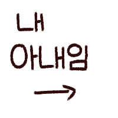

카리나 허벅지
댓글
😭
1황 카리나
여자는 장원영 남자는 카리나 선호가 더 많은듯
늙어서 그런거 아닐까 ㅋㅋㅋㅋ
난 장원영 무서워
사람이 아닌 존재같음
그리고 토미에 닮음
내 아내임
내 아임니다
저는 카리나의 남편 입니다.
ntr 드간다
내 아내임

내 안에 임하소서
지기네
참하다 고우다 고귀하시다...
와우
위에 의사선생님 보고왔더니 카리나가 눈이 안들어온다
킹벅지
저 상의 혹시 배꼽이 나오면 안된다는 뭐 그런 규정때문에 입는걸까
벅지부 장관님 하셔야 함
부럽다 모두가 자길 볼때마다 좋아해주니.. 어떤 기분일까
못생긴 년들은 싫어함 ㅋㅋㅋ
이 귀한 것을 개붕이인 내가 봐도 괜찮은걸까